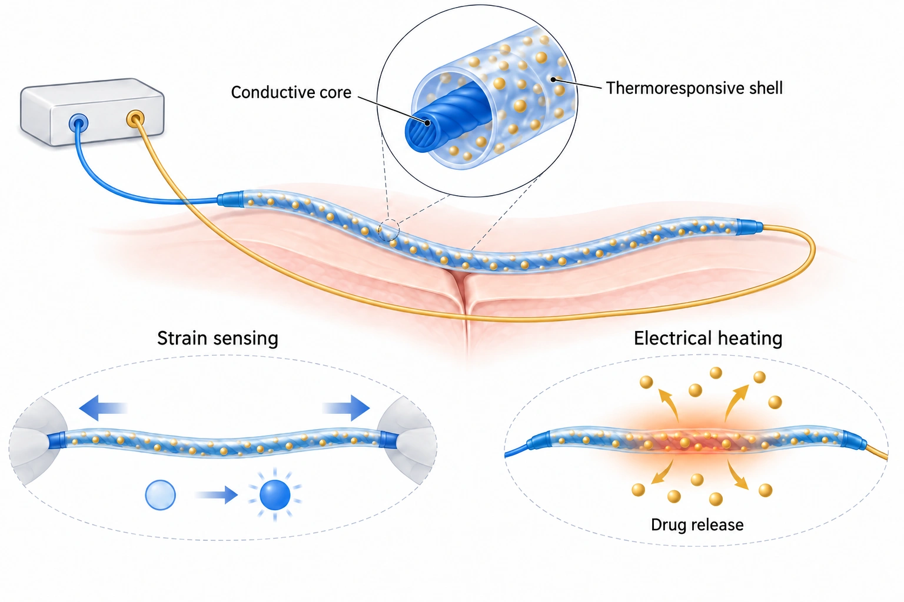

Research context and placement
Local text confirms fiber-sensor/FPCB connections and closed-loop voltage control, supporting actual component/system integration.
Research background
A suture fixes tissue, while sensing local deformation and delivering an agent require additional functions. DRESS combines strain sensing with externally powered drug release in one fiber. Integration of sensing and heating must be distinguished from clinical treatment efficacy.
Approach and advances
The structure comprises an AgNP/PU conductive core, a PDMS protective/insulating intermediate layer and a drug-loaded PVA–PNIPAm thermoresponsive outer layer. Resistance changes provide a strain readout, while externally supplied current produces Joule heating for thermal response and release. The accompanying concept omits the PDMS intermediate layer and does not reproduce the complete cross-section.

AI-generated, not-to-scale concept illustrating strain sensing by a conductive fiber core and drug release from a drug-loaded thermoresponsive polymer shell through Joule heating driven by externally supplied current. The blue brightness-change symbol is a qualitative sensing cue, not an actual LED, optical detector, signal magnitude or time-series data. Gold symbols represent drugs qualitatively, not their actual composition or particle count. Wire routing, fiber texture and wound geometry are schematic and do not reproduce actual dimensions, surgical placement or a complete circuit. This is not experimental data; therapeutic efficacy in humans has not been established. The paper’s AgNP/PU core–PDMS protective/insulating intermediate layer–PVA–PNIPAm outer layer is simplified here: the PDMS intermediate layer is omitted. This image does not reproduce the complete cross-section.
AI-generated, not-to-scale concept illustrating strain sensing by a conductive fiber core and drug release from a drug-loaded thermoresponsive polymer shell through Joule heating driven by externally supplied current. The blue brightness-change symbol is a qualitative sensing cue, not an actual LED, optical detector, signal magnitude or time-series data. Gold symbols represent drugs qualitatively, not their actual composition or particle count. Wire routing, fiber texture and wound geometry are schematic and do not reproduce actual dimensions, surgical placement or a complete circuit. This is not experimental data; therapeutic efficacy in humans has not been established. The paper’s AgNP/PU core–PDMS protective/insulating intermediate layer–PVA–PNIPAm outer layer is simplified here: the PDMS intermediate layer is omitted. This image does not reproduce the complete cross-section.
This is not a reproduced paper figure and does not establish permission to reuse the original figure.
The user-approved existing AI concept was reviewed as actual pixels with its required bilingual caption. Processing is limited to display WebP encoding, without cropping, content editing or new generation. This does not establish permission to reproduce original article figures or completion of an entire main-text/SI audit.
Evaluation and conditions
Strain–resistance response, electrical heating and drug release are separate evaluation endpoints. Biological tests comprise an NIH-3T3 in vitro scratch assay and an ex vivo demonstration on excised porcine skin. Migration-related closure of a culture scratch must not be recast as wound-healing rates in living animals or patients.
Key findings
The main text combines strain sensing and thermally triggered release in a suture, with closed-loop voltage control compensating strain-dependent resistance and temperature changes. That control maintains heating conditions. It does not validate closed-loop therapy that diagnoses healing or drug concentration and determines a dose.
Limits and open questions
The authors identify hydrophilic-drug loading and a need for in vivo validation. Heating, release, fixation, repeated deformation and long-term use need condition-matched review; SI and raw data remain unread. Externally wired demonstrations do not establish wireless or battery-free operation, and cell/excised-skin results do not establish human safety or treatment efficacy.
Related external research
Wirelessly operated bioelectronic sutures for the monitoring of deep surgical wounds
DOI: 10.1038/s41551-021-00802-0 ↗
RFID capacitive sutures were evaluated in live pigs; DRESS adds thermal release but its checked biological tests are cellular/ex vivo.
Do not equate wireless operation with clinical or healing benefit.
Abstract checkedCorresponding-author verification
Jungmok Seo: corresponding authorThis record concerns Jungmok Seo’s correspondence designation. Author order or an asterisk alone is not treated as confirmation; this check is separate from verification of the research content.
The saved final published first page (p. 18112) was checked against a saved print of the official RSC author-role page. Within the complete eleven-author list, Jaehong Lee and Jungmok Seo are explicitly co-corresponding authors. The saved evidence covers the first page and author-role section, not acquisition of the complete article. This verification is limited to the saved author/correspondence sections; it does not establish a fresh check of publisher changes or completion of full main-text/supplementary review.
- Correspondence evidence source ↗
Corresponding authors: Jaehong Lee; Jungmok Seo
Saved published first page, printed p.18112; Nanoscale 13, 18112–18124 (2021); saved official RSC author-role print · This verification is limited to the saved author/correspondence sections; it does not establish a fresh check of publisher changes or completion of full main-text/supplementary review.
- Main-text review scope
- On 6 October 2026, read the DOI/title/final-issue-matched RSC Introduction, Results §§2.1–2.3 and 2.5–2.9, Conclusions and Experimental §§4.1–4.12. SI and raw data are outside this commentary’s direct reading scope. This extends the earlier abstract/§§2.1/2.9/Conclusions reading, without claiming a complete main-text/SI audit.
- Supplementary review scope
- SI, separate videos and raw data were not directly read for this commentary.
- Pending verification
- SI, raw data and long-term-use conditions remain to be reviewed. Hydrophilic-drug loading and the need for in vivo validation remain limitations. Cell migration and excised-skin demonstrations do not establish human wound healing or clinical efficacy; temperature compensation is not autonomous diagnosis or drug-dose control.
COVERAGE & OUTREACH
Coverage and outreach
Links are checked for their relationship to this paper. Media publication does not establish independent reporting or additional experimental validation.
BLISS 이연택 학생 Nanoscale에 논문 게재 ↗
The Yeontaek Lee/Nanoscale announcement image labels DRESS, strain monitoring, drug release, FPCB and conductive-fiber architecture, identifying #60.
Body read Read the public news JSON title/date and its linked image content (entry: ytlee-contest-2-2). Lab self-promotion; artwork is not redistributed.
Unverified candidates and access limits (1)
Unverified candidate · Nanoscale 2022 Lunar New Year Collection ↗
The indexed collection includes #60's exact title, authors and DOI.
Body access limited Direct access returned 403. Only indexed collection content was available; the year in the collection title was not treated as a publication date.
Sources and verification scope
On 6 October 2026, read the DOI/title/final-issue-matched RSC Introduction, Results §§2.1–2.3 and 2.5–2.9, Conclusions and Experimental §§4.1–4.12. SI and raw data are outside this commentary’s direct reading scope. This extends the earlier abstract/§§2.1/2.9/Conclusions reading, without claiming a complete main-text/SI audit.
The additional commentary is editorially approved within the stated evidence scope. This does not imply complete verification of all main-text and supplementary material.
- Additional main-text review scope
- On 6 October 2026, read the DOI/title/final-issue-matched RSC Introduction, Results §§2.1–2.3 and 2.5–2.9, Conclusions and Experimental §§4.1–4.12. SI and raw data are outside this commentary’s direct reading scope. This extends the earlier abstract/§§2.1/2.9/Conclusions reading, without claiming a complete main-text/SI audit.
- Additional supplementary review scope
- SI, separate videos and raw data were not directly read for this commentary.
- Public publication baseline ↗ · #60 · 2026-10-03
- Crossref metadata ↗: This Crossref entry records a public bibliographic metadata check. The actual abstract, main-text and supplementary reading scope is documented separately on this page; a metadata check does not establish full-text reading or a complete main-text and supplementary audit. license_urls lists registered links and does not establish permission to redistribute text or figures. It may include TDM or posting-policy links.
- Source for updated publication metadata ↗
Bibliographic and publication-status check; separate from main-text review. - A multifunctional electronic suture for continuous strain monitoring and on-demand drug release ↗
local_pdf_read · Existing BLS06_Nanoscale_2021_Multifunctional_Electronic_Suture_MAIN.pdf; PDF pp.2-3,10 / article pp.18112-18113,18120; title and DOI matched. Checked 2026-10-03. - A multifunctional electronic suture for continuous strain monitoring and on-demand drug release. ↗
public_abstract_via_EuropePMC_API · Europe PMC REST search resultType=core, abstractText; PMID 34604894; DOI 10.1039/d1nr04508c. Checked 2026-10-03. - A multifunctional electronic suture for continuous strain monitoring and on-demand drug release ↗
publisher_selected_main_text_read · 2026-10-06 actual publisher main-text reading, selected Results and Experimental; SI not included - Additional commentary source ↗
Research background · Introduction; Results §§2.1–2.3,2.5–2.9; Conclusions; Experimental §§4.1–4.12 · publisher_selected_main_text_read - Additional commentary source ↗
Approach and advances · Introduction; Results §§2.1–2.3,2.5–2.9; Conclusions; Experimental §§4.1–4.12 · publisher_selected_main_text_read - Additional commentary source ↗
Evaluation and conditions · Introduction; Results §§2.1–2.3,2.5–2.9; Conclusions; Experimental §§4.1–4.12 · publisher_selected_main_text_read - Additional commentary source ↗
Key findings · Introduction; Results §§2.1–2.3,2.5–2.9; Conclusions; Experimental §§4.1–4.12 · publisher_selected_main_text_read - Additional commentary source ↗
Limits and open questions · Introduction; Results §§2.1–2.3,2.5–2.9; Conclusions; Experimental §§4.1–4.12 · publisher_selected_main_text_read - Additional commentary source ↗
Connections to related work · Introduction; Results §§2.1–2.3,2.5–2.9; Conclusions; Experimental §§4.1–4.12 · publisher_selected_main_text_read - Additional commentary source ↗
Connections to related work · Existing comparator abstract only; external original and SI not reread · prior_external_abstract_only